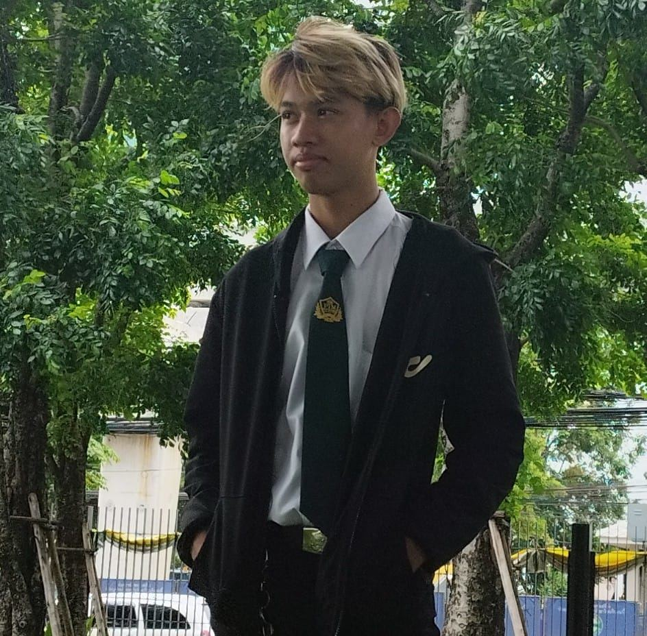

Introduce yourself
ชื่อ-นามสกุล : นาย จิระสิน รัตนติสร้อย
ชื่อเล่น : ต้นไม้
สาขาวิชา :Digital and information technology (DIT)
กลุ่มเรียน(section) : G2
รูปตนเอง(optional)

เหตุผลที่อยากเรียน Full stack web development
เพราะต้องการอยากมีความสามารถในการพัฒนาเว็บไซต์ทั้ง(FrontEnd-BackEnd) และอยากมีความเชี่ยวชาญด้าน,HTML,CSS,JavaScript
เพื่อนำไปต่อยอดในอนาคต
ความคาดหวังต่อวิชานี้
ผมคาดหวังว่าจะเขียน HTML,CSS,JavaScript เป็นโดยไม่ต้องพึ่งพาใคร
อะไรจุดอ่อน ที่ตนเองต้องพัฒนาเกี่ยวกับทักษะ Programming และ แนวทางการพัฒนา
จุดอ่อน คือ ใช้เวลานานในการหาข้อผิดพลาดในโปรแกรม
แนวทางการพัฒนา คือ ต้องพยามฝึกฝนการเขียนโค้ดของตัวเองเยอะๆและเรียนพร้อมเรียนรู้ตลอดเวลา
Website ที่ตนเองชื่นชอบ หรือ ได้รับแรงบันดาลใจ
Clickhere
ใส่รูปภาพที่น่าสนใจ